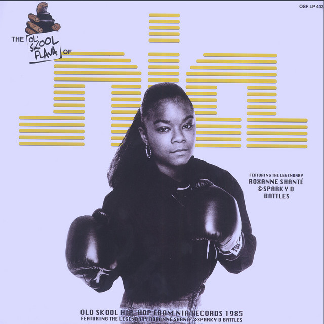
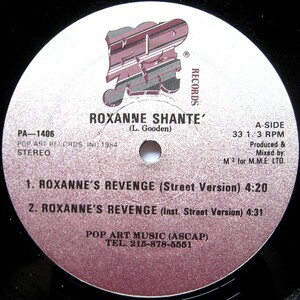

Natalie Glenn
Web Development Student & Cultural Storyteller
I transformed my academic research on Roxanne Shanté's impact on hip-hop into a modern, mobile-friendly website.
Featured Project: Roxanne’s Revenge and the Rise of Female Battle Rap
My project explores how Roxanne Shanté’s 1984 track “Roxanne’s Revenge” wasn’t just a diss record — it reshaped hip-hop by putting a teenage girl at the center of the battle rap scene. This site reimagines academic research into a readable, responsive experience for modern web users.



View Project